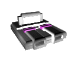
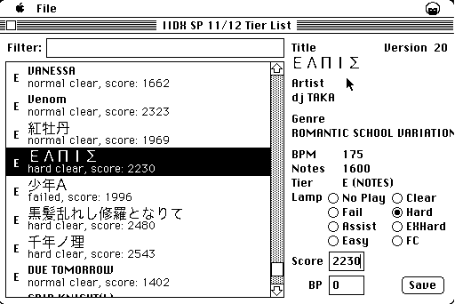
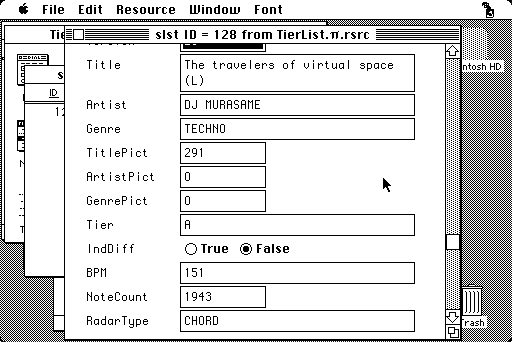
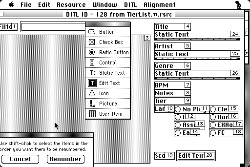
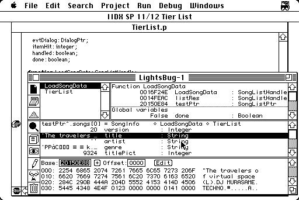
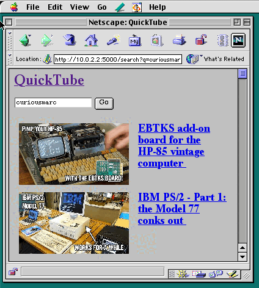
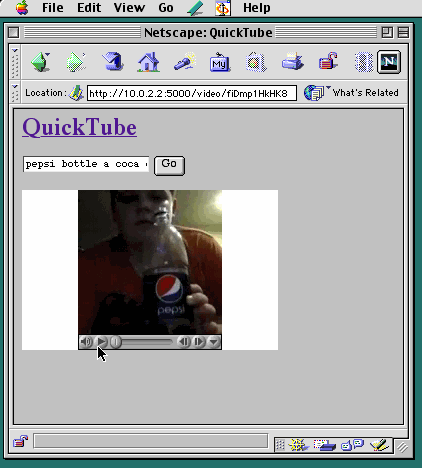
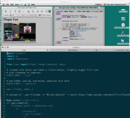
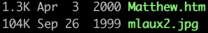

Welcome to my home on the World Wide Web! Feel free to take a look around. This site should work with pretty much any web browser ever created. If you find any bugs, please email me!
I have been a visitor to Arcade UFO since 2013 and became one of the owners in 2017. Our team is dedicated to bringing the authentic Japanese game center experience to Austin! We primarily feature rhythm games (BEMANI, etc.) and fighting games (everything from Super Turbo to PS5 titles). We also have some shmups from CAVE, a wide selection of SEGA NAOMI titles, and a few classics!
We recently moved to an amazing new location at 9029 Research Blvd. Come check us out if you're in the area!
Here are some of the programming projects I've been working on. Most of these are focused on retrocomputing (and a lot of retro gaming recently, for some reason), but not because of nostalgia (I wasn't around when most of this stuff was current) - programming for old systems is just fun because it's actually possible for one person to mostly understand everything that's going on, from the CPU up.
This is in contrast to how I develop professionally, where I use the modern tools and processes necessary to produce a high-quality, maintainable product, no matter how many layers of abstraction are involved. :-)
You can click any of the screenshots in this section to open a full-size view!
This is a Game Boy emulator for System 6 featuring a JIT compiler to achieve playable speeds on an average 68030 based Mac. My target machine was the Macintosh IIci, which came out the same year as the Game Boy and features the ~amazing~ 25 MHz 68030. Downloads and more info available here.
Web-based editor for 4bpp SNES graphics. Supports creation of 8x8 and 16x16 tiles and placing the tiles in backgrounds. Also supports assignment of colors to palettes. Crane is under active development and feature requests are welcome - I wrote this for my own game but it might be useful to y'all too!

SNES/SFC EPROM CartridgeModifying the SHVC-1A0N-01 SNES cartridge PCB to accept a 27C040 EPROM.
TECHNO Style Essentials is a IIDX tier list... this time for Android and iOS!
An art project for the IBM PC and Yamaha YM3812 (AdLib). Vexations is a piano piece that the composer ostensibly wished to be played 840 times in a row. My version flips a random bit in the synthesizer patch each iteration to gradually distort the sound.
This application allows you to track your scores on level 11 and 12 notecharts in beatmania IIDX. Screenshots are from the Mini vMac emulator, but this has also been successfully tested on a real Macintosh Plus!
|
 |
 |
| the finished product | ResEditing |
|
 |
 |
| designing main dialog | Think Pascal debugger |
|
 |
 |
 |
| (click for 996k animated GIF) | (250k full-size PNG) |
I do a fair amount of electronics repair and also spend quite a bit of time making obscure software/hardware combinations work out. Here are some notes I've taken in these situations, so they might help someone else trying to do the same thing.
I'm currently an Android developer at H-E-B. I've worked on the Quest and Quest 2 at Oculus, the FullStory mobile SDK, the Shop app at Sysco Foods, HipChat/Stride (RIP) at Atlassian, and Evernote's Android app.
I attended the University of Texas at Austin from 2013 to 2016 and graduated with a bachelor's degree in computer science.
Here's my GitHub.
/etcCheck out my first-ever website, created with the help of my uncle when I was very little.



Last updated 29 May 2026
{kind=link}
{kind=link}
{kind=link}
{kind=link}
{kind=link}
{kind=link}
{kind=link}
{kind=link}
{kind=link}